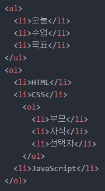
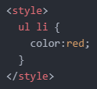
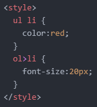
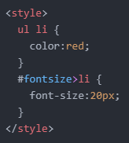

- 선택자에 대해 더 알아보기 1
얼마나 걸릴지는 모르겠지만 며칠 동안은 선택자에 대해서 좀 더 알아보려고 합니다.
일단은 이전에 배운 선택자의 기초에 대해 복습부터 해보겠습니다.
아래 동영상 강의 순서대로 보시면서 복습하시면 됩니다.
오늘은 복습에 중점을 둔 터라 딱 한 가지만 추가로 학습하고 마치겠습니다.
바로 '부모 자식 선택자'입니다.
아래와 같은 코드가 있고 그 결과는 다음과 같습니다.

여기서 'style' 태그에 'li' 선택자를 만들고 'color:red;'와 같이 선언하면 다음과 같은 결과를 얻게 됩니다.
그런데 저는 'ul' 태그 내부의 'li' 태그에만 이를 적용하려고 합니다.
이럴 땐 다음과 같이 'ul' 태그를 쓰고 한 칸 띄운 후 'li' 태그를 작성하면 됩니다.

여기서 가장 먼저 나오는 태그가 부모 태그, 그 뒤에 나오는 태그가 자식 태그입니다.
그리고 그 결과는 다음과 같습니다.
그 다음으로 HTML, CSS, JavaScript 텍스트의 크기를 조정해 보려고 합니다.
'style' 태그에 'ol {font-size:20px;}'와 같은 코드를 적용하면 '부모', '자식', '선택자' 텍스트도 같은 크기로 바뀌게 될 것입니다.
이럴 때는 다음과 같은 코드를 작성하면 됩니다.

부등호를 통해 'li' 태그가 'ol' 태그의 직계 자손임을 나타내주는 것입니다.
그런데 원하는 결과를 얻지 못했습니다.
'ol' 태그의 직계 자손이면서 'li' 태그인 그런 태그가 2개나 있기 때문입니다.
이럴 때 필요한 것이 무엇인지 이전에도 배웠고 오늘 복습도 했습니다.
바로 클래스 선택자와 id 선택자입니다.
저는 id 선택자를 선택하여 적용해 보겠습니다.
다음과 같이 코드를 작성해 주면 됩니다.

그리고 그 결과는 다음과 같습니다.
오늘은 여기까지 하겠습니다.
그럼 내일도 화이팅!